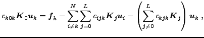
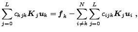

This communication investigates the use of preconditioning and parallelization methods to improve the computational efficiency of iterative solvers for linear systems arising in the Stochastic Finite Element Method (SFEM).
Linear matrix systems obtained in the SFEM are typically of much larger dimension than those obtained in the classical deterministic FEM. Indeed, SFEM systems are typically [1] of form:
The objective of this communication is to compare several preconditioning
and parallelization methods which capitalize on the aforementioned
properties to improve the computational efficiency of iterative solvers
for SFEM systems of form ( ). Based on the dominance
of
over the other
's, a first
preconditioning method consists in reformulating the problem as a system
of linear equations with multiple right-hand sides:
). Based on the dominance
of
over the other
's, a first
preconditioning method consists in reformulating the problem as a system
of linear equations with multiple right-hand sides:
|  for | (2) |
A second preconditioning method consists in keeping only the diagonal block matrices on the left-hand side and moving the remaining blocks to the right-hand side:
|  for | (3) |
The SANDIA developed Trilinos library [2] is used to implement the framework. The package Epetra for mat-vec operations, and the AztecOO, IFPACK and Belos preconditioner packages are used in particular. The Belos package provides a solver manager for solving linear systems simultaneously on multiple right-hand sides. All packages use the Message Passing Interface (MPI) to allow for execution on parallel platforms. At the conference, the methods discussed above will be presented and then compared based on their application to a case history in stochastic structural mechanics.